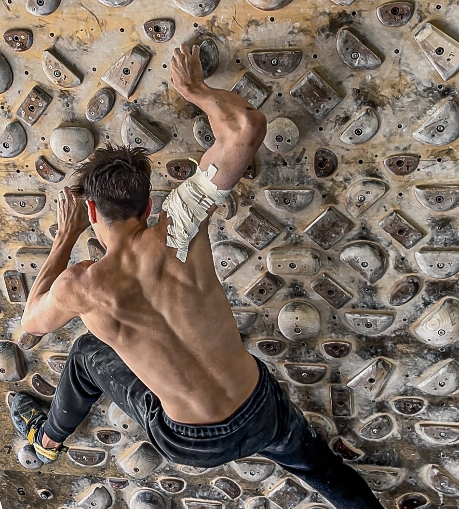
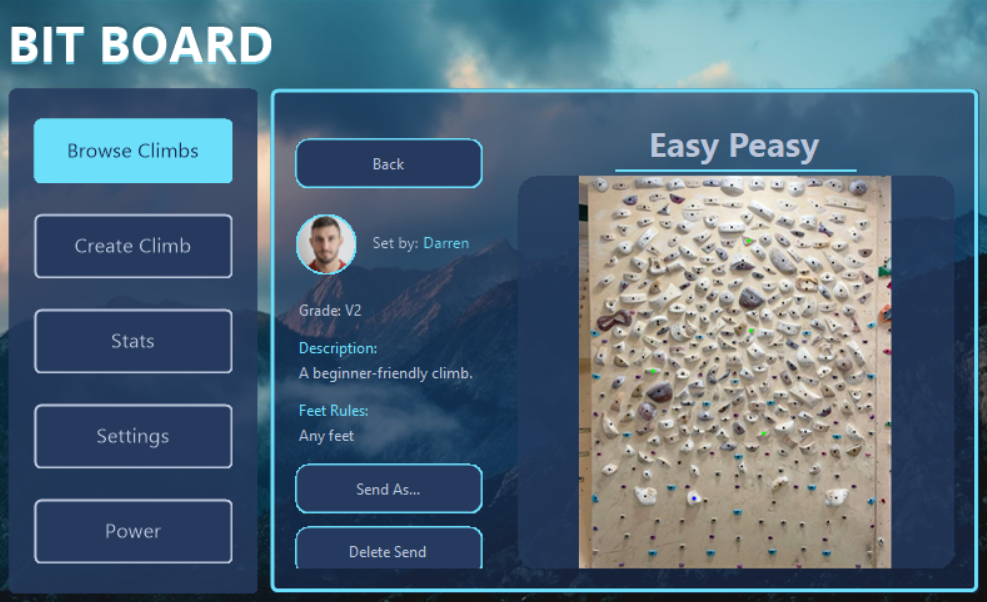
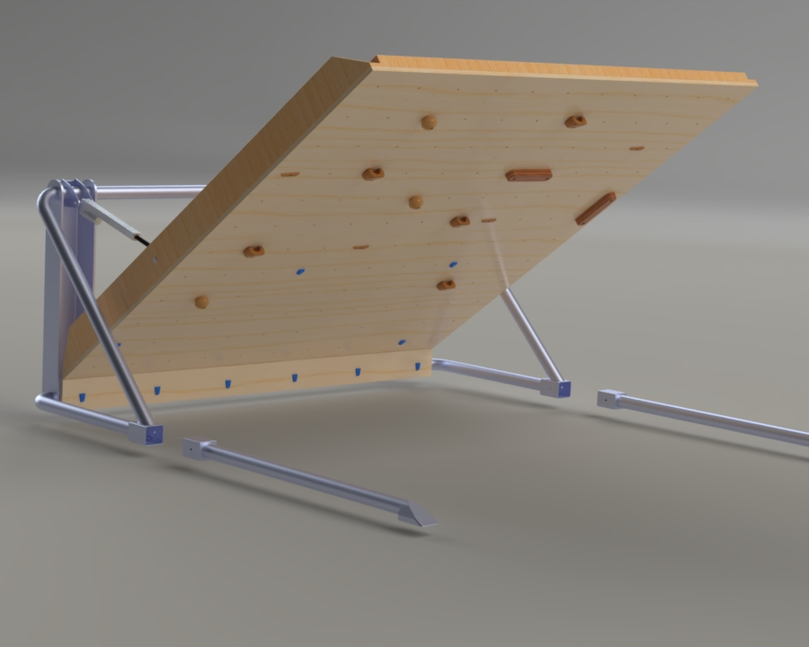
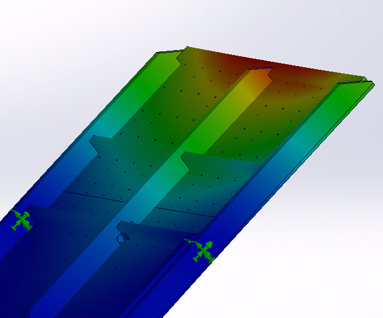
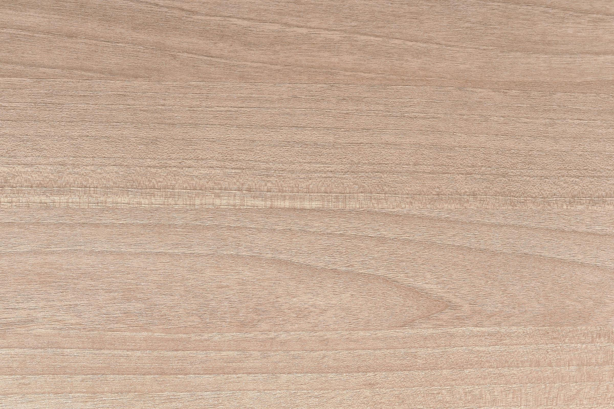

Smart Route-Setting
Scan your custom holds layout via camera, auto-locate them on a touchscreen, and draw new routes in seconds.
The system uses computer vision to detect hold positions and map them to an interactive interface, allowing climbers and setters to create, share, and modify routes without physically rearranging the wall.


Mechatronic Safety
Redundant sensors and emergency locks engage on actuator fault to protect climber and equipment.
The wall's angle-adjustment system is designed with multiple layers of protection, ensuring that any failure in the actuation system triggers an immediate safe state.
Sustainable by Design
FEA-validated minimal-metal design for sustainability — over 80% wood construction.
Finite element analysis was used to verify the structural integrity of the primarily timber frame, allowing metal components to be minimised without compromising safety or rigidity.


Materials & Build
Sustainably sourced hardwood frame with durable finish and modular actuator mounts.
The construction prioritises renewable materials and modularity, making the wall easier to maintain, upgrade, and eventually disassemble for reuse.